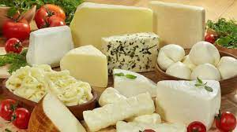

Neden Kilo Alamıyorsun?
Birkaç maddede neden kilo alamadığını konuşalım, böylece yanlışlarını daha iyi göreceksin.
Kilo almak için kolay yol arıyorsun!
Evet. Kilo almak için kolay yol yok. Zaten kolay gelseydi almış olurdun. Yapmamız gereken yanlışları öğrenmek, buna biraz kafa yormak, zaman harcamak ve doğru olanı yapmak.Öyle taktiklerle hilelerle olmaz. Kilo aldırıcı ilaç diye bir şey yok! En azından sağlıklı şekilde bunu yapamazsın. Evet supplement veya vitamin takviyeleri belki kilo almak için eksiğini giderebilirler. Ama bunlar zaten besin, ilaç değil. Sen doğru beslenmeyi öğrenmelisin önce. Sonra hayatına fitness de girdiği zaman, birazcık ağırlık çalıştığın zaman hızlı ve sağlıklı kilo almak çocuk oyuncağı.Tabii ki yeterince yemiyorsun!
Tek başıma büyük pizza yiyorum diyebilirsin, tamam ama bunu günde kaç kere yaptın? Kaç zaman üst üste yaptın?
Fazla kalori alıyorum, ama kilo alamıyorum diye bir şey yok. Bu dediğin bilimsel olarak imkânsız!
Günlük kalori ihtiyacını hesaplaman lazım, buna göre kalorini artırman lazım. Başka bir çıkar yolu yok.
Tabi ki bunu yapmanın bazı taktikleri var. Yani fazla ye demeyle fazla yenmiyor. Bunları ilerleyen kısımlarda paylaşacağız, kilo almak için iştah nasıl açılır göreceğiz.
Çok daha fazla sebep olabilir, ama şimdilik çok uzatmadan kilo almak için ne yapılmalı bakalım.
Kilo Almak için Besin Listesi, Ne Yemeliyiz?
Aslında her şey işe yarar, yeterince yenildiği zaman; hiçbir şey işe yaramaz, yeterince toplam kalori almazsanız.
Ama bu listedeki besinler yüksek kalori içeren besinler. Ne demiştik, fazla kalori yemek lazım ki kilo alalım, tek kural bu. Fazla kalori almamıza yardımcı olacak ne varsa, işimize yarar.
1- Pirinç

Evet kimilerine göre sağlıksız kalori, eğer kilo vermek istiyorsanız öyle. Ama siz kilo almak istiyorsunuz. Pirinç öyle ki, direk kaslarınızın içinde su tutmanıza yardımcı olacak. Böylece dolu dolu gezeceksiniz!
Pirinç kolayca yenebilir, yüksek kaloridir, hatta protein oranı bile yüksek sayılır!
2- Süt

Süt sıvı şekilde kalori almanıza yardımcı olur. Eğer laktoza alerjiniz yoksa, süt muazzamdır. Protein tozu dediğimiz şey sütten oluşuyor işte, daha ne bekliyorsunuz!
Eğer süt içmek sizde alerji yaparsa, sivilceniz vb. çıkar; sürekli gaz olursa, çok abartmayın. Günde 1 litre içerek test edin.
Ayrıca sütü gidip light içmeyin sakın! Ne kadar kalori o kadar iyi, yağ da yüksek kalori içerir. Merak etmeyin sağlıksız değil.
3- Kuruyemişler

Kuruyemiş gibisi yok. İnanılmaz kalorileri var. Oldukça besleyiciler. Kuruyemiş ayrıca midenizi de doldurmaz.
Mesela büyük bir öğün kuru fasulye pilav yediniz, 20 dakika sonra üzerine kuruyemişi ekleyebilirsiniz. 100 gram fındık, fıstık, kaju, badem, ceviz, leblebi bile inanılmaz kalori içerir ve yenmesi de çok kolaydır!
4- Patates
Patates çok sevilen bir besin, kalorisi inanılmaz yüksek değil ama çok yenmeye müsait. Püre olur, hatta çok abartmadan sağlıklı şekilde kızartabilirsiniz de. Kalorisi bu şekilde yükselecektir.
5- Kırmızı et, yağlı
Kırmızı et eğer bir de seviyorsanız, kilo almanıza çok yardımcı olur. İçindeki besinleri, proteini, özellikle de yağlı ise biraz kalorisi oldukça faydanıza olacaktır.
6- Bakliyatlar, nohut mercimek barbunya
Bakliyat gibisi yok! Hem proteinleri yüksek hem karbonhidratları. Yağ oranı da düşük, bunu yüksek yağ oranı olan örneğin kuruyemişlerle de beraber yiyebilirsiniz. Böylece kaloriyi tavana vurduracaksınız.
Tabii lif oranları yüksektir, sizi sık sık tuvalete çıkarabilir. Midenizi de biraz şişirebilir, çünkü lif oranı yüksektir.
7- Balıklar

Balık çok yağlı bir ettir. Ayrıca Omega 3 oranı da yüksektir. Böylece vücudunuzdaki Omega 6 – Omega 3 dengesini korumanız da kolaylaşır.
Balığın faydalarını anlatmakla bitiremeyiz. Kesinlikle haftada 2 defa tüketin!
8- Tam yağlı peynir, yoğurt
Sütte bahsettiğimiz şeyler aslında burada da geçerli. Eğer seviyorsanız yemeklerinizin yanında biraz yoğurt, kahvaltılarda da bolca peyniri eksik etmeyin!
9- Bitter çikolata
Biraz temiz beslenmenin dışına çıkmak size çok koymayacaktır. Bitter çikolata ile 2-3 günde bir kendinizi şımartın, kalori değeri de yüksektir. İşinize gelir.
Kilo Almak İçin Yağ Alımını Artırın
Makro besinler (protein, karbonhidrat, yağ) arasında yağ en yüksek kaloriye sahip olandır.
Dolayısıyla yağ oranı düşük diyetlerin kalorisini yüksek tutmak zordur. O yüzden yapmamız gereken olabildiğince sağlıklı yağ kaynaklarını kullanarak yağ alımımızı arttırmak.
Sanılanın aksine yağ kaynakları tüketmemiz yağlanmamıza sebep olmaz. Yağlanmamıza aktivitesiz kalmamız ve yaktığımızdan çok fazla kalori almamız sebep olur. Tabii yapmamız gereken olabildiğince sağlıklı yağları tüketmek.
Bunlara örnek besinler olarak zeytinyağı, badem, fındık, fıstık, ceviz, avokadoyu verebiliriz. Örnek olarak bir avuç badem tüketerek kolayca 150 kalori alabiliriz. Bunun yanında beslenmemizde takibini sağlarsak tereyağı gibi diğer yağ kaynaklarını da az oranda tüketebiliriz.
Kilo Almak İçin Daha Çok Su
Su zaten hedefimiz ne olursa olsun beslenmemizdeki en önemli yere sahip. Suyu zaten bol bol içmeliyiz ama kilo alma konusunun altında bu taktiği yazmamın sebebi sindirim ve mide genişliği.
Günlük su alımımızı arttırırsak bu tükettiğimiz besinleri daha rahat sindirmemizi sağlayacaktır. Su sindirim reaksiyonlarında önemli bir rol oynar.
Aynı zamanda su tüketimimizi arttırırsak bu midemizin tolere edebileceği hacmi de arttırabilir. Bu da tıkanmadan daha fazla besin yiyebiliriz demektir. Bu yemek yeme yarışmacılarının da kullandığı bir taktiktir.
Dikkat etmemiz gereken bir nokta aşırı su alımı çok zor olsa da su zehirlenmesine sebep olabilir. Böbrek problemleri olmayan sağlıklı bir bireyin böbrekleri saatte 800ml-1000ml kadar suyu süzebilir. Bunu göz önünde tutarak su alımımızı arttırırsak su zehirlenmesi yaşamayız.
Kilo Almak İçin Besinleri Karıştırarak Kalorilerini Arttırın
Örnek olarak köfte yaparken içine fazladan tam buğday ekmeği, yulaf unu katılabilir. Aynı zamanda yumurta ile omlet yaparken içine yulaf katılabilir. Makarna yapılırken üstüne kıyma ve tam yağlı kaşar peyniri eklenebilir.
Birinci taktikle de birleştirirsek pişmiş yemeklerin üstüne zeytinyağı eklenebilir. Bu işlemler genel olarak daha fazla yediğimizi hissettirmezken daha fazla kalori almamıza yardımcı olacaktır.
Kilo Almak İçin Bileşik Egzersizler
Sağlıklı kilo almaktan bahsediyorsak, kas kazanımından bahsediyoruz demektir.
Eğer ki yağ oranımız gerçekten çok düşük değilse yağ almak en son istediğimiz şey olmalı.
Eğer çok düşük bir yağ oranında yaşamımızı sürdürmek istiyorsak bu örnek olarak eklemlerimizde problem çıkarabilir. Ama tabi ki bu durumlar çok nadirdir ve genelde sağlıklı bir şekilde kilo almaya başlayınca kendiliğinden hallolur.
Bunun dışında yağ alımını minimumda tutarken kas geliştirmek için ağırlık antrenmanları yapmalıyız. Ağırlık antrenmanlarında da bileşik egzersizlere ağırlık vermeliyiz.
Bileşik egzersizler aynı anda daha fazla kas grubunu çalıştıran egzersizlerdir (squat, deadlift, bench press vs.). Bu egzersizler bizim daha az zaman ve enerji harcayarak daha fazla kas çalışmamızı sağlayacak ve dolayısıyla kas gelişimimizi izole egzersizlere göre daha çok destekleyecektir.
Kilo Almak İçin Kaloride İstikrarı Koruyun
Aslında hayatta neyden bahsedersek bahsedelim başarıya ulaşmamız için istikrarlı olmalıyız. Hafta içi her gün için 250 kalori fazlası yaratabildiğimiz bir beslenme planını rakamı rakamına uyguladığımızı düşünelim. Herkes ne kadar çok yediğimizi söylüyor bize.
Fakat hafta sonları bu düzeni bozuyoruz ve 5 günde yarattığımız 1000 kalori fazlalığını hafta sonu toplamda 1500 kalori eksik alarak kaybediyoruz.
Sonra çok yediğimizi ama yine de kilo alamadığımızı söyleyerek yakınıyoruz. Bunun yerine istikrarı korusak, disiplinli olsak ve hafta sonları da beslenmemizi takip etsek sonuçlarımız kaçınılmaz olacaktır. Bu tarz diyet bozma örneklerine birçok farklı şekilde rastlayabiliriz. Bunu düzeltmek için yapmamız gereken istikrarı sürdürebilmek.
Eğer düzeninizin bozulmasına engel olamıyorsanız düzeni değiştirin ama kalori alımınızı değiştirmeyin. Bu öğün saatlerinizi değiştirmeniz, gece yemeniz ya da sabah kalorilerinizin çoğunu tamamlamanız anlamına gelebilir.
Tam optimal olmasa da öyle ya da böyle aynı kalorileri almaya devam edebilirseniz, takibini yapabilir ve kilo almanızı kesin hale getirebilirsiniz.
Hızlı metabolizması olan insanlar için kilo almak mucize değil. Hormonsal problemleriniz yoksa bu 6 taktiği uyguladığınız sürece kilo almakta problem yaşamayacaksınız!